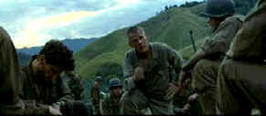

|
Thin Red Line,The/B-,A |
|
Fox/1998/170m/ANA 2.35 |
Beautiful photography cannot make up for a thin dramatic line. That's the crux of the problem for The Thin Red Line, director Terrence Malick's long awaited come-back film. The dramatic line wavers and disappears into the mist of overblown poetry. Malick undermines the power of battle with arty, confused storytelling. Half the time, I couldn’t follow what was happening when and whether it was real or not.
|
 |
| Colonel Tall barks out orders. ©Fox |
Following a battle weary troop in the heat of battle is a time
honored war movie convention. Under the strain of unremitting
battle, strong men crack. By focusing on individuals, the mental
explosions can often overpower the barrage of bullets and bombs.
Some characters crack, some rise to the situation. The Thin
Red Line follows this simple war line, but twists and turns
it into an unrecognizable pattern. Many elements of the script
do not ring true, and this is of the utmost importance when
capturing an audience in a film rife with realism.
Set on Guadalcanal as US forces
are trying to turn the tide of the war, The Thin Red
Line is one ambling and bloody walk up the hill of battle.
An all-star cast cannot inject any excitement into what should
have been a stirring war epic.
Casting James Caviezel
and Ben Chaplin in two main roles appears as a major mistake to
me. The actors look so much alike, it makes the confused
storytelling even more difficult to follow. I can only think
that Malick made a very conscious choice to do this, almost
making the two soldiers different aspects of the same
characters. More confusion for me even as I write. Colonel Tall,
appears to belong more to the tradition of Apocalypse Now than
to any heritage of the World War II film. Nolte’s raving
performance seems far too over the top
The cinematography of John Toll is
superb. Yes, visually, The Thin Red Line delivers all you
could want and then some. The score by Hans Zimmer is powerful,
but Malick's direction is far too languid. It's almost as if
he's been transfixed by the film battle and suffers from film
stock shock.
The DVD is quite beautiful. It does
justice to the magnificent visualizations of Malick. Depth of
image is remarkable and color vitality stunning. The Thin Red
Line is a consistently sharp DVD, with no gnawing artifacts
to stand in the way of enjoying the great images. The Dolby
Digital 5:1 surround is aggressive and accurate locates mortar
and bullet. The exquisite recording of the Melanisian Songs on
the soundtrack is offered as a bonus feature as well. The air
surrounding the voices is ethereal.

Preston Sturges was Hollywood's resident comic genius for more than a decade. His movies are timeless. Click on his image to read all about it.
Check out the Movie Poster Archive for short bios and images of Susan Hayward, Kirk Douglas, Katharine Hepburn and many more. This month's featured star is Clark Gable.
]Imaging
Science Foundation
The Imaging
Science Foundation promotes proper standards in home theater
viewing. ISF trained technicians offer monitor calibration
services to consumers. The difference in a properly
calibrated monitor can be astounding. Click on the image to find
an ISF member near you.
HOT
LINKS
DVD
Verdict
They
may be judgmental, but that's the point, isn't it. Lots of DVD
reviews plus news and more
The
Home Theater Forum
Looking for
lively and helpful exchanges on home theater, DVD, movies. Visit
this friendly site and get a hardy welcome.
Home
Theater Reference Reviewing System
When you read a DVD review it's of utmost importance to know
what equipment is being used to evaluate quality. Click on the
projectors to find out more.